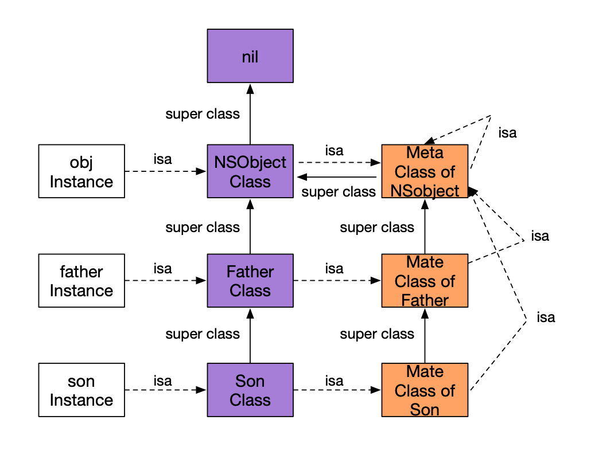
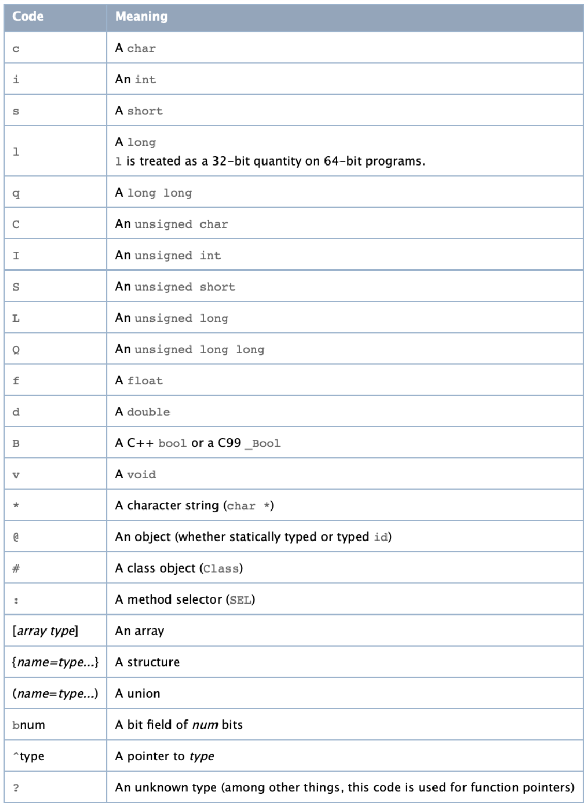

1. 对象、类对象、元类 1.1 isa指向、superClass指向 1 2 3 4 5 6 7 8 9 10 11 @interface Person : NSObject @end @interface Teacher : Person @end // 然后执行 Person *p = [[Person alloc] init]; Teacher *t = [[Teacher alloc] init];
我们根据上诉代码进行分析，isa指针的指向。
注意，这里是用的是真机，而非Mac/模拟器
1.2 实例对象的isa 首先我们先看Person的实例p的isa指向情况
1 2 3 4 5 6 7 8 9 10 // 首先打印一下p的内存情况 (lldb) po p <Person: 0x1d0016620> // 输出p指针的情况 (lldb) x/4gx p 0x1d0016620: 0x000001a10018d0c5 0x0000000000000000 0x1d0016630: 0x00000001d0091b70 0x0000000000000000 (lldb) p 0x000001a10018d0c5 (long) $6 = 1791002988741
这里拿到p指针指向的内存情况，我们知道第一块内存区域存放的是isa指针，直接打印的话，发现就是一串数字，啥也看不出来。还记得上一章中object_getClass反向验证isa指向最后的”&”运算吗？0x000001a10018d0c5这个值就是isa->bits，我们用它与ISA_MASK进行&运算。因为这里是用的真机，所以ISA_MASK = 0x0000000ffffffff8ULL，如果是用Mac或者模拟器，根据芯片类型判断是否是ARM64架构还是x86，然后使用对应的值进行换算。
1 2 3 4 5 6 // p/x输出内存的16进制 (lldb) p/x 0x000001a10018d0c5 & 0x0000000ffffffff8ULL (unsigned long long) $3 = 0x000000010018d0c0 (lldb) po 0x000000010018d0c0 Person
打印出来是Person。所以isa指向的就是Person类。那我们做一下验证，直接通过object_getClass方法来找一下Person这个类。
1 2 (lldb) p/x object_getClass(p) (Class _Nullable) $0 = 0x000000010018d0c0 Person
是不是发现，Person类的内存地址是一样的。如果再实例化一个p1，看p1->isa指向的和p->isa指向的是否是同一个Person类的内存地址。
答案是肯定的，Person类在内存中只有一份，也就是说所有的类对象在内存中都只有一份。
1.3 类对象的isa 接下来，我们继续寻找Person类对象的isa指向情况。
1 2 3 4 5 6 7 8 9 10 11 (lldb) p 0x000001a10018d0c5 (long) $6 = 1791002988741 (lldb) x/4gx 0x000000010018d0c0 0x10018d0c0: 0x000001a10018d099 0x00000001b5b12ea0 0x10018d0d0: 0x00000001c00edd00 0x0000000400000007 (lldb) p/x 0x000001a10018d099 & 0x0000000ffffffff8ULL (unsigned long long) $7 = 0x000000010018d098 (lldb) po 0x000000010018d098 Person
发现Person类对象的isa指向的还是Person，但是这个Person所在的内存地址与Person类对象不一样。
这里就出现了元类的概念（Meta Class）。
1.4 元类的isa 我们继续寻找元类的isa
1 2 3 4 5 6 7 8 (lldb) x/4gx 0x000000010018d098 0x10018d098: 0x000001a1b5b12ec9 0x00000001b5b12ec8 0x10018d0a8: 0x00000001c00edc80 0x0000000100000007 (lldb) p/x 0x000001a1b5b12ec9 & 0x0000000ffffffff8ULL (unsigned long long) $9 = 0x00000001b5b12ec8 (lldb) po 0x00000001b5b12ec8 NSObject
使用相同的方法找到元类的isa指向的是NSObject，这个NSObject是类对象吗？
我们通过object_getClass([[NSObject alloc] init])来看看NSObject类对象的内存
1 2 3 4 5 6 7 8 9 10 11 12 (lldb) p/x object_getClass([[NSObject alloc] init]) (Class _Nullable) $11 = 0x00000001b5b12ea0 NSObject (lldb) x/4gx 0x00000001b5b12ea0 0x1b5b12ea0: 0x000001a1b5b12ec9 0x0000000000000000 0x1b5b12eb0: 0x00000001d41fbb00 0x0000000a0000000f // 从这里开始，就已经跟上面的内存地址重复了 (lldb) p/x 0x000001a1b5b12ec9 & 0x0000000ffffffff8ULL (unsigned long long) $12 = 0x00000001b5b12ec8 (lldb) po 0x00000001b5b12ec8 NSObject
到这里，是不是看明白了点啥？
Person的元类的isa指向的是NSObjec的元类。
1.5 使用相同的办法查看Teache实例的isa 1 2 3 4 5 6 7 8 9 10 11 12 13 14 15 16 17 18 19 20 21 22 23 24 25 26 27 28 29 (lldb) x/4gx t 0x1d022dee0: 0x000001a102680fd5 0x0000000000000000 0x1d022def0: 0x0000000000000000 0x0000000000000000 (lldb) po 0x000001a102680fd5 & 0x0000000ffffffff8ULL Teacher (lldb) p/x 0x000001a102680fd5 & 0x0000000ffffffff8ULL (unsigned long long) $18 = 0x0000000102680fd0 (lldb) po 0x0000000102680fd0 Teacher (lldb) x/4gx 0x0000000102680fd0 0x102680fd0: 0x000001a102680fa9 0x00000001026810c0 0x102680fe0: 0x00000001c00e6700 0x0000000400000007 (lldb) po 0x000001a102680fa9 1791041736617 (lldb) p/x 0x000001a102680fa9 & 0x0000000ffffffff8ULL (unsigned long long) $21 = 0x0000000102680fa8 (lldb) po 0x0000000102680fa8 Teacher (lldb) x/4gx 0x0000000102680fa8 0x102680fa8: 0x000001a1b5b12ec9 0x0000000102681098 0x102680fb8: 0x00000001c00e6a80 0x0000000300000007 (lldb) p/x 0x000001a1b5b12ec9 & 0x0000000ffffffff8ULL (unsigned long long) $23 = 0x00000001b5b12ec8 (lldb) po 0x00000001b5b12ec8 NSObject
1.6 总结 
每个实例对象的isa指针指向与之对应的类对象(Class)。
每个类对象(Class)都有一个isa指针指向一个唯一的元类(Meta Class)。
每一个元类(Meta Class)的isa指针都指向最上层的元类(Meta Class)（图中的NSObject的Meta Class）。最上层的元类(Meta Class)的isa指针指向自己，形成一个回路。
每一个元类(Meta Class)的Super Class指向它原本Class的Super Class的Meta Class。最上层的Meta Class的Super Class指向NSObject Class本身。
最上层的NSObject Class的Super Class指向nil。
只有Class才有继承关系，实例对象与实例对象不存在继承关系。
每一个类对象(Class)在内存中都只有一份。
2. 通过源码分析 接下来我们从runtime的源码上分析这些都是什么东西。
2.1 实例对象 id（Instance） 1 2 /// A pointer to an instance of a class. typedef struct objc_object *id;
id 这个struct的定义本身就带了 个 ＊, 所以我们在使用其他NSObject类型的实例时需要在前加上 ＊, 使 id 时却不用 。
什么是objc_object?
1 2 3 4 /// Represents an instance of a class. struct objc_object { Class isa OBJC_ISA_AVAILABILITY; };
这个时候我们知道Objective-C中的object在最后会被转换成C的结构体, 在这个struct中有 个 isa 指针,指向它的类别 Class。
2.2 类对象 Class 1 2 /// An opaque type that represents an Objective-C class. typedef struct objc_class *Class;
Class的本质就是一个objc_class的结构体。
1 2 3 4 5 6 7 8 9 10 11 12 13 14 15 16 17 18 19 20 21 22 23 24 25 26 27 28 29 30 // 注意，这个源码是被简化之后的。 struct objc_class : objc_object { // Class ISA; Class superclass; cache_t cache; // formerly cache pointer and vtable class_data_bits_t bits; // class_rw_t * plus custom rr/alloc flags Class getSuperclass() const { return superclass; } void setSuperclass(Class newSuperclass) { superclass = newSuperclass; } class_rw_t *data() const { return bits.data(); } void setData(class_rw_t *newData) { bits.setData(newData); } bool isRootClass() { return getSuperclass() == nil; } bool isRootMetaclass() { return ISA() == (Class)this; } }
看到这个结构体，大家可能会觉得不对，这个源码是错的，不是我们经常看到的，里头没有那些我们常说的变量，methodLists、ivars等等。
1 2 3 4 5 6 7 struct objc_class { ... struct objc_ivar_list * _Nullable ivars OBJC2_UNAVAILABLE; struct objc_method_list * _Nullable * _Nullable methodLists OBJC2_UNAVAILABLE; struct objc_cache * _Nonnull cache OBJC2_UNAVAILABLE; struct objc_protocol_list * _Nullable protocols OBJC2_UNAVAILABLE; } OBJC2_UNAVAILABLE
里头确实有ivars、methodLists等，但是这个是OBJC2_UNAVAILABLE。其内部确实有这些东西的，我们一步步去探究。
继续回到上面的结构体，发现ISA变量被注释掉了，其实也没有影响的，因为objc_class 继承自 objc_object（内部有isa变量）。那我们的属性、方法是存放在哪了呢？
通过查看源码，我们看到有这么一个属性class_data_bits_t，这个东西里可能存放着我们需要的东西。稍后我们做验证。
OC中一切皆为对象
2.4 验证属性的存在位置 在2.2小结我们说了属性、方法、等可能存在于class_data_bits_t这个结构体内部，我们查看它的源码：
1 2 3 4 5 6 7 8 9 10 11 12 13 14 15 16 17 18 19 20 21 22 struct class_data_bits_t { friend objc_class; // Values are the FAST_ flags above. uintptr_t bits; public: class_rw_t* data() const { return (class_rw_t *)(bits & FAST_DATA_MASK); } void setData(class_rw_t *newData) { ASSERT(!data() || (newData->flags & (RW_REALIZING | RW_FUTURE))); // Set during realization or construction only. No locking needed. // Use a store-release fence because there may be concurrent // readers of data and data's contents. uintptr_t newBits = (bits & ~FAST_DATA_MASK) | (uintptr_t)newData; atomic_thread_fence(memory_order_release); bits = newBits; } };
在public的方法中有class_rw_t* data()这个方法，我们进一步探索：
1 2 3 4 5 6 7 8 9 10 11 12 13 14 15 16 17 18 19 20 21 22 23 24 25 26 27 28 29 30 31 32 33 34 35 36 37 38 39 40 struct class_rw_t { // Be warned that Symbolication knows the layout of this structure. uint32_t flags; uint16_t witness; #if SUPPORT_INDEXED_ISA uint16_t index; #endif explicit_atomic<uintptr_t> ro_or_rw_ext; Class firstSubclass; Class nextSiblingClass; const method_array_t methods() const { auto v = get_ro_or_rwe(); if (v.is<class_rw_ext_t *>()) { return v.get<class_rw_ext_t *>(&ro_or_rw_ext)->methods; } else { return method_array_t{v.get<const class_ro_t *>(&ro_or_rw_ext)->baseMethods()}; } } const property_array_t properties() const { auto v = get_ro_or_rwe(); if (v.is<class_rw_ext_t *>()) { return v.get<class_rw_ext_t *>(&ro_or_rw_ext)->properties; } else { return property_array_t{v.get<const class_ro_t *>(&ro_or_rw_ext)->baseProperties}; } } const protocol_array_t protocols() const { auto v = get_ro_or_rwe(); if (v.is<class_rw_ext_t *>()) { return v.get<class_rw_ext_t *>(&ro_or_rw_ext)->protocols; } else { return protocol_array_t{v.get<const class_ro_t *>(&ro_or_rw_ext)->baseProtocols}; } } }
确实如我们所说的，这里确实存在着我们想要的东西：methods、properties、protocols等。
那我们该怎么获取到这些数据，来证明这些就是我们想要的东西呢？
我们知道在c语言中，一个数组，获取数组中的某个元素的值有多种方法：
1 2 int a[] = {1,2,3}; printf("index 1 = %d - %d", a[1], *(a+1));
比如上面的代码，我们可以直接输出某个元素的下标，也可以通过内存地址来偏移进行读取，同样，我们也可以采取地址偏移来获取objc_class->bits的值。
需要偏移多少呢？
第一个变量是Class，这是一个结构体，内部有一个isa指针，所以这是8个字节。
1 2 3 4 5 6 7 8 9 10 11 12 13 14 15 16 17 struct cache_t { private: explicit_atomic<uintptr_t> _bucketsAndMaybeMask; // 8 union { struct { explicit_atomic<mask_t> _maybeMask; // 4 #if __LP64__ uint16_t _flags; // 2 #endif uint16_t _occupied; // 2 }; explicit_atomic<preopt_cache_t *> _originalPreoptCache; // 8 }; ... ... };
其实这些就能算出来我们需要多少字节，我已经标好了。静态变量和方法是没有算在结构体内部的哈。
所以8+24 = 32个字节。
也就是我们获取到的objc_class的isa指针，然后偏移32个字节，也就是0x20。
我们做一下验证。
2.4.1 llvm 验证属性存放的位置 1 2 3 4 5 6 7 8 9 10 11 12 13 14 15 16 17 18 19 20 21 22 23 24 25 26 27 28 29 30 31 32 33 34 35 36 37 38 (lldb) po p <Person: 0x10060e160> (lldb) x/4gx p 0x10060e160: 0x021d8001000081cd 0x0000000000000000 0x10060e170: 0x0000000000000000 0x86c8f7c495bce30f // 地址0x10060e160+0x20(偏移32个字节) (lldb) p/x (class_data_bits_t *)0x10060e180 (class_data_bits_t *) $3 = 0x000000010060e180 (lldb) p $3->data() (class_rw_t *) $4 = 0x0000000100605fd0 (lldb) p *$4 (class_rw_t) $5 = { flags = 3592064 witness = 1 ro_or_rw_ext = { std::__1::atomic<unsigned long> = { Value = 4301317328 } } firstSubclass = 0x000000010060e4d8 nextSiblingClass = 0x000000010060e4d8 } (lldb) p $4->properties() (const property_array_t) $8 = { list_array_tt<property_t, property_list_t, RawPtr> = { = { list = { ptr = 0x0000000100606a50 } arrayAndFlag = 4301285968 } } }
进一步的验证还有待去探索，先到这里，之后补充。
2. 属性和成员变量 我们在
1 2 3 4 5 6 7 8 9 10 11 @interface Person : NSObject { NSString *hobby; } @property (nonatomic, copy) NSString *name; + (void)sayHello; - (void)sayHi; @end
通过clang，将main.m生成cpp文件查看类中两者的区别。
1 2 3 4 5 6 7 8 9 10 11 12 13 14 15 16 17 18 19 20 21 22 23 24 25 26 27 typedef struct objc_object Person; struct Person_IMPL { struct NSObject_IMPL NSObject_IVARS; NSString *hobby; // 声明的属性name NSString *_name; }; // @property (nonatomic, copy) NSString *name; // + (void)sayHello; // - (void)sayHi; /* @end */ // @implementation Person static void _C_Person_sayHello(Class self, SEL _cmd) { } static void _I_Person_sayHi(Person * self, SEL _cmd) { } static NSString * _I_Person_name(Person * self, SEL _cmd) { return (*(NSString **)((char *)self + OBJC_IVAR_$_Person$_name)); } extern "C" __declspec(dllimport) void objc_setProperty (id, SEL, long, id, bool, bool); static void _I_Person_setName_(Person * self, SEL _cmd, NSString *name) { objc_setProperty (self, _cmd, __OFFSETOFIVAR__(struct Person, _name), (id)name, 0, 1); } // @end
我们发现，声明的属性name，被直接转化成了带有下划线的成员变量。同时在实现中，多了set、get方法。
属性： 在cpp文件中属性有下划线，并且自动生成set和get方法
成员变量：没有下划线，没有set、get方法
实例变量：特殊的的成员变量（类的实例化）
3. 方法 我们在类中声明的方法都在method_list_t中，发现这里并没有我们的类方法。
1 2 3 4 5 6 7 8 9 10 11 12 13 static struct /*_method_list_t*/ { unsigned int entsize; // sizeof(struct _objc_method) unsigned int method_count; struct _objc_method method_list[5]; } _OBJC_$_INSTANCE_METHODS_Person __attribute__ ((used, section ("__DATA,__objc_const"))) = { sizeof(_objc_method), 5, {{(struct objc_selector *)"sayHi", "v16@0:8", (void *)_I_Person_sayHi}, {(struct objc_selector *)"name", "@16@0:8", (void *)_I_Person_name}, {(struct objc_selector *)"setName:", "v24@0:8@16", (void *)_I_Person_setName_}, {(struct objc_selector *)"name", "@16@0:8", (void *)_I_Person_name}, {(struct objc_selector *)"setName:", "v24@0:8@16", (void *)_I_Person_setName_}} };
因为类方法在元类里头。
1 2 3 4 5 6 7 8 9 static struct /*_method_list_t*/ { unsigned int entsize; // sizeof(struct _objc_method) unsigned int method_count; struct _objc_method method_list[1]; } _OBJC_$_CLASS_METHODS_Person __attribute__ ((used, section ("__DATA,__objc_const"))) = { sizeof(_objc_method), 1, {{(struct objc_selector *)"sayHello", "v16@0:8", (void *)_C_Person_sayHello}} };
这里我们以name的get方法为例子，说明一下这都是什么意思：
1 2 - (NSString *)getName; {(struct objc_selector *)"name", "@16@0:8", (void *)_I_Person_name}

@16@0:8
‘@’：第一个@表示返回值，对象
‘16’：16个字节
‘@’：第二个@表示对象类型(id)
‘0’：我们知道@表示对象，0表示从0开始，占8个字节
‘:’：SEL，方法明
‘8’：表示从8开始，占8个字节，满足一共16个字节
sel 和 imp
总结
实例对象、类对象、元类。一切皆为对象，主要因为objc_object这个结构体。
isa的走位图，superClass的指向
属性、变量，实例方法、类方法的存放
属性、变量的区别，存放的位置
实例方法放在类对象的列表；类方法的存放在元类的方法列表
sel、imp的区别